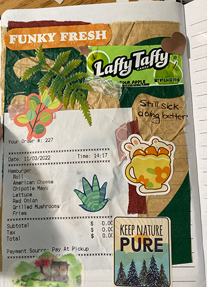
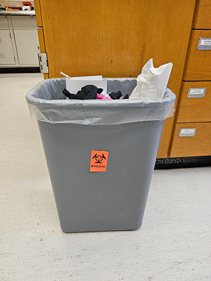

It’s really ridiculous how much space junk journaling takes up. Scrapbooking, a common art form among hobbyists, is the art of cataloging memories through photos and collectible memorabilia structured purposefully on a page. Junk journaling is like its carefree cousin. While the traditional elements of scrapbooking might find themselves inside the pages of a junk journal, the main focus of the spread is often the daily ephemera collected over a period of time. Instead of having items taken from the memory’s moment, you get the remnants and the leftovers.
I recently thought about my collection of materials needed for it and cringed at the amount of space it takes up. Fancy hand-lettering materials, books of scrapbooking paper, as well as various forms of glue, take up a sizable portion of my childhood bedroom. Special to junk journaling, however, is the garbage itself. Before the ticket stubs, receipts, and the front of wrappers make it inside my book, they lie, waiting inside a small cardboard box for their time to be collaged into a memory, taking up space. Almost three months ago, I decided to move to an online format to relieve myself of this issue. Surprisingly, this digital migration revealed another hidden advantage; it allows more freedom in the kind of trash I could document. Before, only papers and other flat objects could be glued (worst case, stapled) to the pages where it would then need to sit between two covers that closed. By sharing the weekly spreads, I was only able to catalog the handpicked and visually pleasing, those that could fit within the limitations of a page. It’s also a more realistic reveal of the garbage that I produce. Not everything I throw away can have cute characters and beautiful color schemes, some must also be a little gross.
A spread of my physical junk journal
My junk journal was like a museum of my ephemera, an archive that serves as a reminder of how I lived. I get to run my fingers over the collaged pieces and remember when it was collected, the events of the day, and why I chose to include it. Whole weekends could be summed up in receipts and food wrappers, print-outs of confirmation emails and pressed flower petals from a friend. Now, this website will serve this purpose, but be able to do much more than a bound book could. Larger objects with dimension, multiple pictures revealing context and perspective are accompanied by detailed descriptions and captions. Here, I am finally able to express, and share in a bigger form, the detailed stories created by the journey the garbage may have created, and why it is coming to an end.
The decision to share this aspect instead of others was a bit vulnerable, though it really shouldn’t. Garbage is our common denominator. We all produce it, especially those who also live in a consumerist society. I’d like to believe that I live at a normal level of sustainability, reusing and recycling what I can. I realized, along the way, that my digital junk journal makes me a little more conscious about what I throw away, how to throw it away correctly, and what changes I can make to my lifestyle to prevent excess waste. I did a little research into this and was swiftly reminded of my contribution to America’s rapidly growing landfills, a topic archeologist Sarah Newman reminds people of. As an archeologist, Newman has an interest in the remnants of other’s lives, especially those that have lived before us. However, with modernity comes a compounded increase in garbage produced, something that concerns Newman. “The biggest myth about trash is simply that we talk about throwing things ‘away.’ There is not, nor has there ever been, an ‘away’ for things to go.” This is largely true as when landfills reach their limit, extensive procedures must be executed to manage the massive piles of trash so carelessly discarded. Through long-term management, landfills can pose less of a threat to human health, even if we were the ones that caused the once innocent land to react that way. The aftercare of municipal solid waste landfills monitors both the emissions that the landfill can produce as well as the receiving surfaces such as the ground or nearby streams of water from further pollution (Laner, 2012), ensuring that the act of literally dumping waste into a hole in the ground isn’t more harmful than it already is.
It is also interesting to think that what I discard could be found by others. Garbage Finds, a blog also centered around trash, is run by a “professional scavenger” who picks garbage off the curb during waste collection day and showcases as well as sells his most interesting and valuable finds. I would be shocked if I was reading an update from a blog like his and found one of my objects listed as a recent discovery. The thought makes me uncomfortable, honestly. After I discard something, I mentally separate it from my life, the bins serving as a way to start again unburdened. This is a perspective shared by Italian writer Italo Calvino, but a perspective scored by Brian Thill who states, “... on a more immediate level, waste really become something for someone else to eliminate for you; and it’s not actually abandoned and scrubbed from the world, just from your world, more or less.”
Biohazard trash from the lab I work at
It isn’t all so bleak as I feel the detail devoted to each singular item, especially the esteemed “Item of the Week” redeems my purpose. As a journal, it exists as a personal archive and a long-term form of memory. “In art, the meaning and value of objects can be flipped, or even shifted from the physical world to the digital. Garbage and ashes may transcend into a work more complex than its source material suggests, and there is always new meaning to discover.” expresses Vik Muniz, an artist whose work is centered around disposables. While missing the tactile art of physical junk journaling, the immortalization of my garbage serves a different yet still important purpose. The temporary becomes forever, the fragile bolstered by lines of code and bytes of data, discarded in reality yet frozen in time. As my trash’s physical bodies decompose over thousands of years, their spirits will live on in digital memory, their stories archived for as long as the internet exists.
An archaeologist talks trash | University of Chicago News. (2023, August 8). News.uchicago.edu.https://news.uchicago.edu/story/archaeologist-talks-trash
Thill, B. (2017). Waste. Bloomsbury Academic, An Imprint Of Bloomsbury Publishing, Inc
Laner, D., Crest, M., Scharff, H., Morris, J. W. F., & Barlaz, M. A. (2012). A review of approaches for the long-term management of municipal solid waste landfills. Waste Management, 32(3), 498–512. https://doi.org/10.1016/j.wasman.2011.11.010
Reframing Trash Into Art. (2023, December 6). https://www.nytimes.com/2023/12/06/special-series/vik-muniz-brazil-garbage-art.html
Things I find in the garbage. (2025, February 14). Things I Find in the Garbage. https://garbagefinds.com/